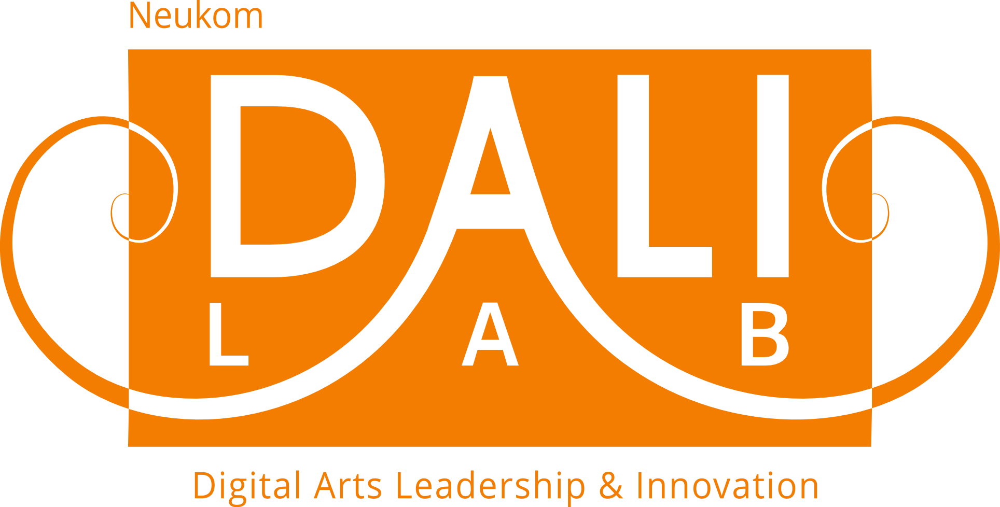

Sit sa fè pati Biwo Analyiz ak Dyalog Kominotè, yon pwoje jire pa Viva Rio nan kad Pwoje Tanbou lapè pou rapòte ak analyize krim ki fèt nan zòn Gran Bèlè epi pou pote solisyon a pwoblèm vyolans nan kominote a.
Biwo Analyiz ak Dyalog Kominotè
Viva Rio Proje Tanbou Lapè
Kay Nou
67, Grand Rue, Bloque Portail St Joseph
Port-au-Prince, Haiti
Direktè Kay Nou ak Biwo Analyiz ak Dyalog Kominotè
Administratè Biwo Analyiz ak Dyalog Kominotè
(509) 3860-1912
Mckennan Postdoctoral Fellow
Dartmouth College Anthropology Department
Chelsey.L.Kivland@dartmouth.edu
This project was designed and developed in the Neukom DALI Lab. The Digital Arts Leadership and Innovation (DALI) Lab is a research and development lab in the computer science department (http://www.cs.dartmouth.edu) at Dartmouth College. We combine innovative technology and elegant design to communicate data effectively, share information in ways that change people's behavior, and display research in ways that help others understand the meaning and importance of the work. Students work in small teams, outside the classroom, with the support of staff and faculty advisors (http://dali.dartmouth.edu).
